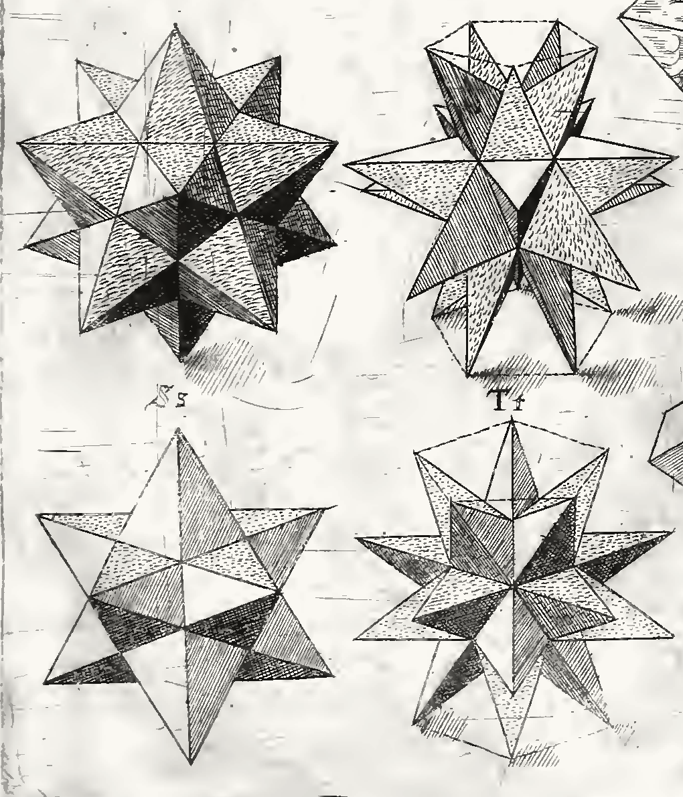

Propositio XXVI: Duo Corpora Regularia Stellata¶
XXVI. Propositio.
Addi possunt congruentiis perfectissimis regularibus, duae etiam aliae congruentiae, stellarum duodecim planarum Pentagonicarum: et duae semisolidae, stellarum Octangulae, et Decangulae.
Claudunt enim pentagonicae solidas figuras aculeatas undique: quarum una fit duodecim angulorum quinquelinearium; altera viginti angulorum trilinearium: illa trinis angulis insistit, haec quinis simul; illa pulchriùs super angulum erigitur; haec rectiùs sedet, incumbens in quinos. In his etsi forinsecus non apparet regulare planum, sed ejus loco Triangulum aequicrurum Pentagonicum; quina tamen hujusmodi semper in unum idemque planum competentia, occultum sub soliditate quinquangulum, veluti cor suum circumstant; faciuntque cum eo dictam stellam pentagonicam, seu Germanico Idiomate, pedem Truttae, Theophrasto Paracelso signum sanitatis. Idea corporis quodammodo eadem est, quae sui Plani; Nam ut in hoc, scilicet in stella quinquangula, binorum semper triangulorum latera in unam rectam competunt, qua parte sui interiore fit basis uni exteriori triangulo, latus verò intimo quinquangulo: sic in solido, semper quinorum solidorum angulorum Triangula singula aequicrura, competunt in unam planitiem, quorum quinque triangulorum seu stellae intima medulla et cor, quinquangulum, fit basis in unâ superficietis anguli solidi: vel in alterâ, substantium quinque solidorum. Est autem tanta cognatio figurarum harum, unius cum Dodecaëdro, alterius cum Icosaëdro: ut videantur hae, praesertim Dodecaëdron, trunca quodammodo et mutila, si cum illis aculeatis comparentur.
Octangula verò et Decangula stella, lateribus suorum radiorum, quae semper in primo et quarto, duobus transitis, congruunt in unam rectam, binae semper et binae congruunt, faciuntque cubum illa quendam, hae Dodecaëdron quoddam, non angulatas sed auriculatas figuras: quia duobus planis angulis coaptatis, hiatu fieri necesse est, qui claudi non potest. Ergò per XI, semisolida tantùm est congruentia.
Perfectissimae dicuntur congruentiae, illa solida, haec semisolida, quia ipsis competit VI, definitio hujus libri quoad soliditatem: planitiebus verò ipsis competit definitio figura perfecta, quae est libro I. secunda, sunt scilicet secundariò perfectae. Nec absurdè dicimus, semisolidam perfectissimam, quia innuimus inchoari aliquid, cui non IX vel X sed cui VI Def. competeret si perfici posset.
f. 0081 · p. Tabulae Ss & Tt
